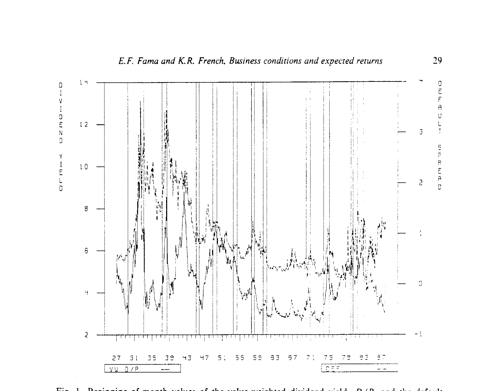
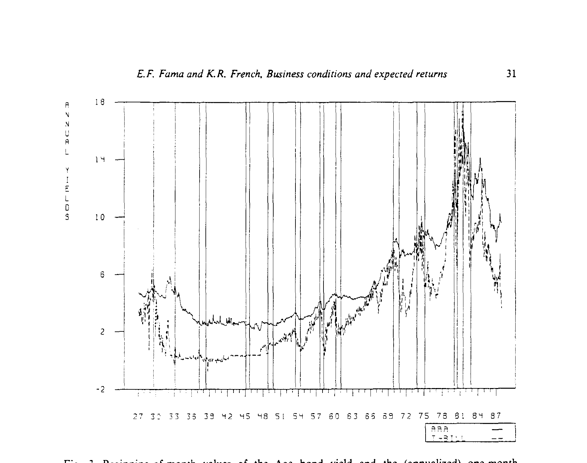
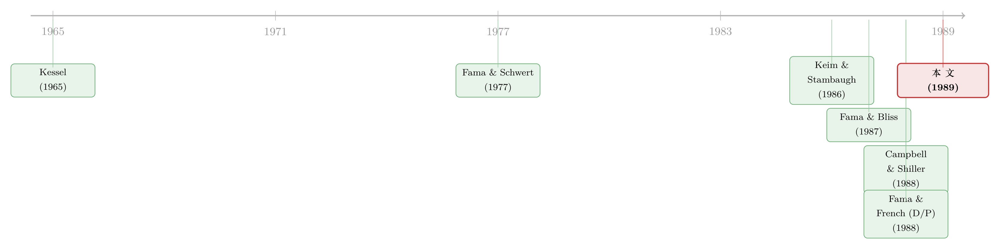

强经济里收益反而低：把股票和债券的预期收益，绑回同一条商业周期
本文读的是 Fama & French (1989, JFE)：股票和长期债券的预期超额收益里，藏着两类随商业周期波动的成分——一类是所有长期资产共享的「期限溢价」（由期限利差 TERM 追踪，在周期波谷高、波峰低），另一类是与更长周期的经济冷暖有关的「风险溢价」（由违约利差 DEF 和股利率 D/P 追踪）。一句话：经济强时预期收益低，经济弱时预期收益高。而最让人意外的是，三个变量——两个来自债市、一个来自股市——竟然同时预测着股票和债券的收益。
1 一个让「有效市场」难堪的事实
先抛出一个让人不太舒服的事实：股票和债券的收益，是可以被预测的。
这句话在 1980 年代末并不温和。如果你能用今天就知道的几个变量，去预测一年后、四年后的股票收益，那意味着什么？一派人立刻得出结论：市场是无效的 (inefficient)——价格里有「泡沫」，有非理性的潮涨潮落，预测力就是市场犯傻的证据。另一派人则反驳：不，可预测性恰恰是理性的预期收益在随时间变化 (rational variation in expected returns)——经济好的时候大家不那么怕风险，要求的回报低；经济差的时候人人自危，要求的回报高。同一个统计现象，两种针锋相对的解读。
Fama 和 French 没有打算去做那个「终审判决」（他们在文末很坦白地说，「最终的判断必须留给读者」）。他们想做的是一件更扎实、也更有说服力的事：讲一个连贯的故事。如果预测股票收益的变量，和预测债券收益的变量，竟然是同一批；如果它们的涨落又都能对得上商业周期的冷暖——那么「预期收益在理性地随经济波动」这个解释，就会显得格外可信。反过来，如果预测力只是零散的、各资产各说各话的噪声，那「市场犯傻」反而更像真相。
所以全文真正咬住不放的，是一个核心问题：
股票和债券的预期收益，是不是被同一套与商业周期挂钩的力量，绑在了一起？
2 三个变量，两边市场
要回答这个问题，先得有「尺子」。Fama-French 挑了三把，每一把都不是凭空捏造，而是各自背着一段文献。
第一把，股利率 (dividend yield, D/P)。 就是价值加权 NYSE 组合过去一年的股利，除以期末市值。用 D/P 预测股票收益是个老掉牙的想法（早到 Dow (1920)、Ball (1978)）：当折现率和预期收益高时，股价相对股利就低，于是 D/P 高。有效市场版本的直觉如此，但「泡沫」版本也能给出同样的预言——价格非理性地暂时偏低时，D/P 同样会高。所以 D/P 本身并不能区分理性与非理性，这一点 Fama-French 心知肚明。它真正新鲜的用法在后面。
第二把，期限利差 (term spread, TERM)。 定义为 Aaa 债券收益率减去一个月国库券利率。它追踪的是债券里的期限（或到期）溢价——长期债相对短期债的预期收益差。这一脉的证据很厚（Fama (1976, 1984, 1986)、Fama & Bliss (1987)、Shiller-Campbell-Schoenholtz (1983) 等）。
第三把，违约利差 (default spread, DEF)。 定义为全部 100 只公司债组合的收益率，减去 Aaa 收益率，是低评级相对高评级的收益率之差。它追踪的是违约溢价的变动（Fama (1986)、Keim & Stambaugh (1986)）。
注意这个布局的妙处：D/P 来自股票市场，TERM 和 DEF 来自债券市场。接着，一个自然的问题是——如果让这些「股市的尺子」去量债券、让「债市的尺子」去量股票，会发生什么？这正是论文的第一个反转所在。
回归的形式很朴素，就是把未来 \(T\) 期的超额收益，回到今天已知的变量上。以 D/P 版本为例：
$$ r(t, t+T) = a + b\,\frac{D(t)}{P(t)} + c\,\text{TERM}(t) + e(t, t+T) $$
DEF 版本则把股利率换成违约利差：
$$ r(t, t+T) = a + b\,\text{DEF}(t) + c\,\text{TERM}(t) + e(t, t+T) $$
这里 \(r(t,t+T)\) 是债券或股票组合从 \(t\) 到 \(t+T\) 的连续复利超额收益（净掉一个月国库券利率），\(T\) 取一个月、一个季度、直到一到四年。资产端，债券用 Aaa、Aa、A、Baa、低评级 (LG) 五档，股票用价值加权 (VW) 和等权 (EW) 两个 NYSE 组合。等权组合受小盘股影响更大，于是顺带把「规模」这个维度也带进来了。
3 第一个反转：同一批变量，预测了两边的收益
回归一跑出来，故事的第一层就立住了。
Tables 2 和 3（分别对应 1927–1987 和 1941–1987）显示：违约利差的所有斜率为正，股利率和期限利差的几乎所有斜率也为正；其中相当一部分——尤其在 1941–1987 期间——超过 2 个标准误。更关键的是那个交叉：
- 股利率 D/P，这把来自股市、众所周知能预测股票收益的尺子，也预测了公司债收益。
- 违约利差 DEF 和期限利差 TERM，这两把来自债市、众所周知能预测债券收益的尺子，也预测了股票收益。
换句话说，三个变量追踪的，是跨资产共同的预期收益成分。股和债，原来一直在听同一个人说话。（关于股债共同因子这条线后来怎样长大，可参见《五个因子，一张网：股票和债券原来在听同一段话》与《股和债，到底在听同一个人说话吗？》。）
还有一个细节值得记住：DEF 和 D/P 的相关性相当高——0.61（1927–87）、0.75（1941–87）。这意味着违约利差和股利率，多半在追踪同一类可预测成分。这一点很「安慰人」：人们本来担心 D/P 的预测力来自股价泡沫，可一旦它和一个纯粹由债市定义的 DEF 高度重合、又同样能预测债券收益，「泡沫」的解释就被削弱了——因为债券价格里没有股票那种故事。
4 第二个反转：斜率的「队形」，泄露了风险的结构
如果故事到这里就停下，那只是「预期收益会动」。Fama-French 真正漂亮的一步，是去看斜率在不同资产间排成了什么队形。这一步，把「预测力」翻译成了「风险结构」。
先看 TERM 的斜率。 它们对所有股票组合和所有长期债券组合，为正、且量级相近。这强烈暗示：期限利差追踪的，是一个对所有长期资产都差不多的期限溢价。一个古老而合理的假说是：这个溢价补偿的是对折现率冲击 (discount-rate shocks) 的暴露——而折现率一动，所有长期证券（无论股债）都会被同方向、同幅度地推一把。期限，是它们共同的软肋。
再看 DEF 和 D/P 的斜率。 这两个就完全不是「整齐划一」了——它们的斜率从高评级债，到低评级债，再到股票，单调地变大。这条递增的队形，和直觉里各类资产的「商业风险」排序惊人地一致：越是收益对经济意外敏感的资产，斜率越大。于是 Fama-French 给了一个解释：DEF 和 D/P 追踪的，是某种商业条件风险的「价格」或「水平」——这个风险溢价的时间变化，对低评级债强于高评级债，对股票又强于债券。
把两个反转合起来，预期收益就被拆成了两块互相独立的成分：一块是所有长期资产共享、量级相同的期限溢价（TERM），一块是随资产风险等级放大的商业风险溢价（DEF 与 D/P）。一把尺子量「期限」，另一把量「信用/经营风险」。
5 这些变量，真的「认识」商业周期吗？
斜率讲完了机制，可整篇文章的题眼是「商业条件 (business conditions)」。凭什么说这些变量追踪的就是经济冷暖，而不是别的什么？这就要回到图上——因为既然预期收益是用这些变量的线性回归来度量的，那么把变量本身画出来，就等于画出了它所捕捉的预期收益成分。
先看 DEF 和 D/P（图 1）。 违约利差在 1930 年代大萧条期间取到最高值，二战后几次较轻的衰退（1957–58、1974–75、1980–82）也有向上的小凸起。但它的「大摆动」明显超出了 NBER 度量的单个商业周期——它在 1930 年代和二战初年那段「普遍经济不确定」的岁月里高企，又在 1953–1973 那段更强、更稳定的时期里持续偏低（尽管那段时间里 NBER 还数出了四次衰退）。D/P 的走势几乎与之亦步亦趋（两者相关 0.61–0.75，肉眼可见）。结论是：D/P 和 DEF 追踪的，是那种会「跨越」多个商业周期、长期持续的经济冷暖。 这也和 Table 1 里它们又高又持久的自相关对得上——D/P 的一阶自相关 0.62（1927–87）、0.79（1941–87），DEF 高到 0.83 和 0.74。

Figure 1: Beginning-of-month values of the value-weighted dividend yield. D/P. and the default
再看 TERM（图 2、图 3）。 期限利差则更贴合 NBER 度量的、更短的商业周期：它在周期波峰附近偏低，在波谷附近偏高。 故事的细节藏在 TERM 的两个组成部分里（图 3）。1933–1951 那段，国库券利率被钉在接近 0 的水平（大萧条 + 美联储二战期间固定利率）；除此之外，国库券利率总是在扩张期上行、收缩期下行，几乎自己就勾出了 NBER 的波峰和波谷。而 Aaa 收益率呢？Fama (1988) 指出短期利率的周期波动是一种均值回归 (mean-reverting) 倾向，于是长期利率的波动就更温和——Aaa 在扩张期涨得比国库券少、收缩期跌得也少。两者一减，TERM 就有了清晰的反周期形态：1951 年之后的每一个周期，TERM 在波谷都高于前后的波峰。 这与 Kessel (1965) 早就记录的期限结构周期性，一脉相承。

Figure 3: Beginning-of-month values of the Aaa bond yield and the (annualized) one-month
到这里，三把尺子各就各位：TERM 对应短周期的经济波动（且自相关衰减快，1941–87 在一年以上的滞后几乎为 0），DEF 和 D/P 对应更持久的长期经济episode。而 TERM 与另外两者的相关性很低（1941–87，TERM 与 D/P 相关仅 0.16、与 DEF 仅 0.18）。三者既都挂在商业周期上，又各管一段——预期收益的变动，于是有了「长短搭配」的丰富层次。
6 一个常被忽略的副产品：随时间拉长，R² 越来越大
还有一个值得单独点一句的现象。随着收益的期限 \(T\) 从一个月拉长到一年、再到四年，回归的 \(R^2\) 系统性地变大。一个月的回归里，\(R^2\) 往往只有零点零几；而到了多年期，对股票和低评级债，\(R^2\) 可以爬到 30%–50% 这个量级。
这并不神秘：如果预期收益本身是缓慢均值回归的（高自相关，正如 D/P、DEF 所示），那么短期里它的变动被巨大的「意外」收益噪声淹没，长期里这些噪声相对被平滑掉，可预测成分就浮出水面。预期收益的可预测性，是一个「长期」现象。 这一点也提醒我们：多年期回归里漂亮的 \(R^2\) 要小心解读，重叠观测和小样本会让推断变得脆弱——这正是后来 Stambaugh (1986) 偏误、以及一整条「长期预测回归到底可不可信」的文献所操心的（可参见《股利收益率真能预测收益吗？——一桩被「标准误」改写的旧公案》）。
7 文献脉络
把这篇论文放回它的时代，脉络其实很清晰。
最早，是 Kessel (1965) 记录了期限结构的周期性——长期国债收益率在扩张期涨得少、收缩期跌得少，于是长短利差天然反周期。这是 TERM 故事的源头。接着，Fama & Schwert (1977) 等人发现股票收益和短期利率之间有「反常」的负相关；多年后人们才明白，那不过是 TERM 所捕捉的反周期预期收益的另一种投影（Chen (1989) 随即确认了这一点）。
债券这边，Keim & Stambaugh (1986) 是关键的一跳——他们系统地用利差去预测股票和债券两边的收益，把「同一批变量横跨两市」这个思路摆上了桌面。同期，Fama & Bliss (1987) 在远期利率里挖出了对未来利率的预测力。股票这边，Campbell & Shiller (1988) 和 Fama & French (1988b) 把股利率的预测力做扎实——后者正是本文作者自己「D/P 预测股票收益」的前作。

本文 Fama & French (1989) 站在这两条支流的汇合处：它没有发明新变量，而是把 D/P、TERM、DEF 三者放进同一张回归表里、同时去量股和债，再用斜率的「队形」和图上的周期形态，织出一个统一的、与商业条件挂钩的预期收益故事。它的精神，二十多年后被 Cochrane (2011) 的「贴现率」总纲一语道破：资产定价的核心议题，早已从「预期收益的横截面」转向「预期收益为何随时间而变」（参见《贴现率：资产定价的中心议题》）。
8 评论与延伸（Q&A + 研究方向）
(a) 几个可能的疑问
Q：可预测性到底证明了市场无效，还是证明了理性的预期收益在变？
这篇论文有意不下这个判决。它的策略是「举证」而非「定罪」：通过展示三个变量都挂在商业周期上、且同时预测股债，让「理性的、随经济波动的预期收益」这个解释显得自洽可信。但作者明说，把这看作市场理性的「安慰性证据」，「多少是个人偏好问题」。同一组事实，泡沫派也能讲一个版本。
Q：TERM 和 DEF/D-P 的区别，是不是只是「短周期 vs 长周期」？
不止。区别有两层。一层是周期长度：TERM 贴合 NBER 的短周期（自相关衰减快），DEF/D-P 追踪跨越多个周期的长期经济episode（自相关又高又持久）。另一层、也是更深的一层，是风险的结构：TERM 的斜率对所有长期资产量级相近（共享的期限/折现率溢价），而 DEF、D/P 的斜率从高评级债到股票单调放大（随资产商业风险递增的溢价）。是斜率的队形，而非只是周期长度，揭示了两类成分。
Q：D/P 不是既能用泡沫解释、又能用理性折现率解释吗？那它凭什么算「商业条件」的证据？
单看 D/P 确实两可。论文的巧劲在于用 DEF 给 D/P 背书：DEF 是纯粹由债券收益率定义的，与股价泡沫无关，而它和 D/P 高达 0.61–0.75 的相关、又同样能预测债券收益。当一个「可能是泡沫」的股市变量，和一个「不可能是泡沫」的债市变量高度重合、追踪同一成分时，泡沫解释就站不住了。
Q：多年期回归里 30%–50% 的 R² 是不是太好看、不可信？
要谨慎。多年期用的是重叠的年度观测，标准误已按 Hansen (1982) / White (1980) 做了异方差和重叠自相关调整，但小样本里这类推断仍偏乐观。高 R² 主要反映「预期收益均值回归、长期里信噪比改善」这一机制，而非短期可交易的暴利。后来的 Stambaugh 偏误文献正是冲着这一点去的。
Q：为什么强经济对应低预期收益，这符合直觉吗？
符合，而且是这篇论文最想传递的「总信息」。经济强时，投资者更富裕、更不怕风险，愿意为承担风险接受较低的补偿，于是预期收益低、当前价格高；经济弱时反之。这与基于消费的资产定价直觉一致（Breeden (1979)、Hansen & Singleton (1983) 那一脉），也把「预期收益的时间变化」锚定在了宏观状态上。
Q：这和后来的 Fama-French 三因子是什么关系？
这是一条不同但相通的线。三因子（1993）做的是横截面——用 SMB、HML 解释不同股票的平均收益差；本文做的是时间序列——用宏观利差解释同一资产预期收益的涨落。1993 年那篇也正是在「股债共同因子」上把本文的精神延续了下去：债市的期限因子和违约因子，与股市因子一起出现在同一张定价表里。
(b) 几个可能的研究问题与提案
1. 把 TERM/DEF/D-P 的周期故事，搬到现代公司债微观数据上重做一遍。 - 【经济故事】Fama-French 用的是 100 只债券的粗组合。今天有 TRACE 逐笔成交、债券层面的收益率与利差。一个自然的问题是：违约利差对预期收益的预测力，是不是主要来自流动性溢价而非纯违约风险？把 DEF 拆成「违约成分」和「流动性成分」，看哪一块在驱动周期性预测力。 - 【可行性】高。TRACE + Mergent FISD 提供逐券数据，流动性度量（如 Roll、Amihud、报价深度）成熟。识别上可用评级、行业固定效应吸收异质性，挑战在于把违约与流动性干净地分开。
2. 外资持有人是否改变了 DEF/D-P 的周期性？ - 【经济故事】1989 年的美国债市以本土投资者为主。如今外资在美国公司债中占比可观，而外资的风险偏好可能顺着全球而非美国的商业周期波动。若外资是边际定价者，违约利差预测的，可能是全球而非美国的经济状态。 - 【可行性】中。需要 TIC（财政部国际资本）持有数据或基金层面的国别持仓，与美国公司债收益匹配。识别难点在于外资持仓的内生性，可考虑用汇率冲击或母国货币政策作为外生变动来源。
3. 期限溢价的「跨资产同质性」在 2008 后还成立吗？ - 【经济故事】本文最干净的结果，是 TERM 斜率对所有长期资产量级相近。但量化宽松把期限溢价压到了历史低位甚至为负。一个值得检验的问题是：QE 时代，TERM 对股票和债券的预测斜率是否脱钩了？若脱钩，说明「折现率冲击同质地推动所有长期资产」这个老假说，被央行的资产购买打破了。 - 【可行性】高。数据现成（CRSP、公司债、国债期限利差），可做滚动窗口或带 QE 虚拟变量的交互回归。
4. 把「斜率队形」做成一个正式的风险价格检验。 - 【经济故事】Fama-French 是用眼睛看斜率从高评级到股票的单调递增。能不能把它写成一个可证伪的横截面约束——即「DEF 暴露的风险价格 × 资产的 DEF beta」应当解释资产间预期收益差，并用 GMM 联合检验单调性？ - 【可行性】中。方法上接近 Is the ex-ante risk premium always positive 那类「带不等式约束的资产定价检验」，数据充足，难点在于设定一个既忠实于原文直觉、又有统计功效的联合假设。
参考文献
- Ball, R. (1978). Anomalies in relationships between securities' yields and yield-surrogates. Journal of Financial Economics 6, 103–126.
- Breeden, D. T. (1979). An intertemporal asset pricing model with stochastic consumption and investment opportunities. Journal of Financial Economics 7, 265–296.
- Campbell, J. Y. and R. Shiller (1988). The dividend-price ratio and expectations of future dividends and discount factors. Review of Financial Studies 1, 195–228.
- Chen, N.-f. (1989). Financial investment opportunities and the real economy. Working paper no. 266, CRSP, University of Chicago.
- Fama, E. F. (1976). Forward rates as predictors of future spot rates. Journal of Financial Economics 3, 361–377.
- Fama, E. F. (1986). Term premiums and default premiums in money markets. Journal of Financial Economics 17, 175–196.
- Fama, E. F. and R. R. Bliss (1987). The information in long-maturity forward rates. American Economic Review 77, 680–692.
- Fama, E. F. and K. R. French (1988b). Dividend yields and expected stock returns. Journal of Financial Economics 22, 3–25.
- Fama, E. F. and G. W. Schwert (1977). Asset returns and inflation. Journal of Financial Economics 5, 115–146.
- Hansen, L. P. (1982). Large sample properties of generalized method of moments estimators. Econometrica 50, 1029–1054.
- Keim, D. B. and R. F. Stambaugh (1986). Predicting returns in the stock and bond markets. Journal of Financial Economics 17, 357–390.
- Kessel, R. A. (1965). The cyclical behavior of the term structure of interest rates. Occasional paper no. 91, NBER.
- Stambaugh, R. F. (1986). Bias in regressions with lagged stochastic regressors. Working paper no. 156, CRSP, University of Chicago.
- White, H. (1980). A heteroskedasticity-consistent covariance matrix estimator and a direct test for heteroskedasticity. Econometrica 48, 817–838.